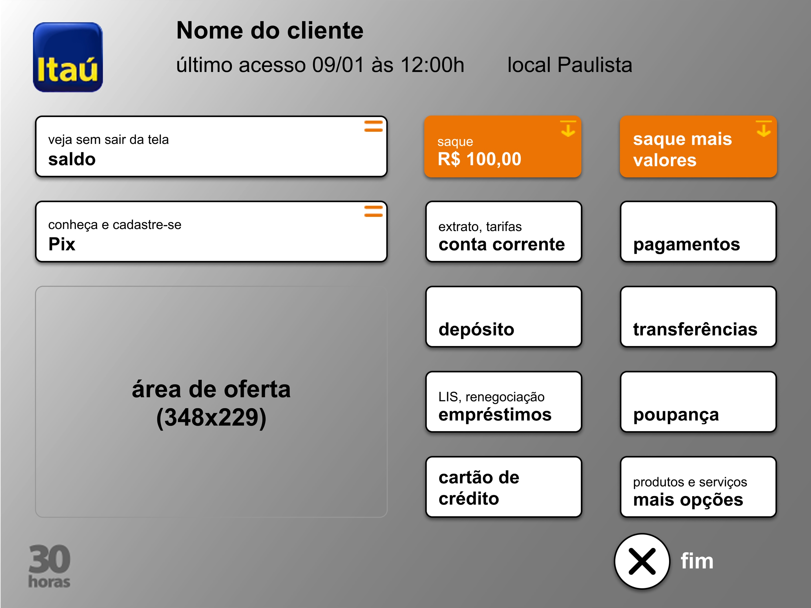
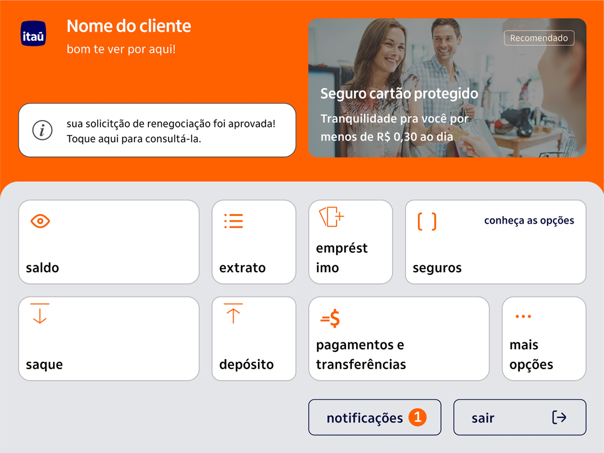
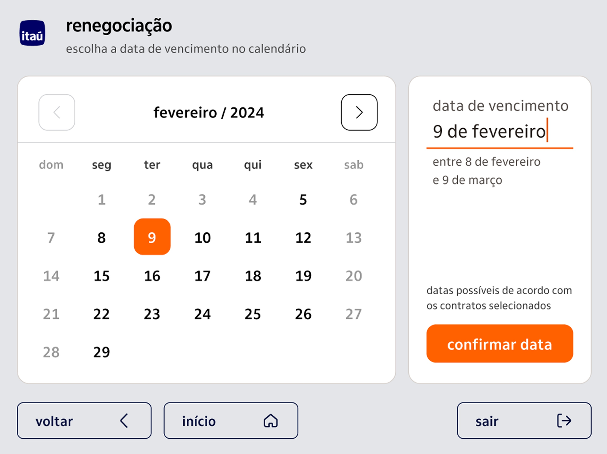
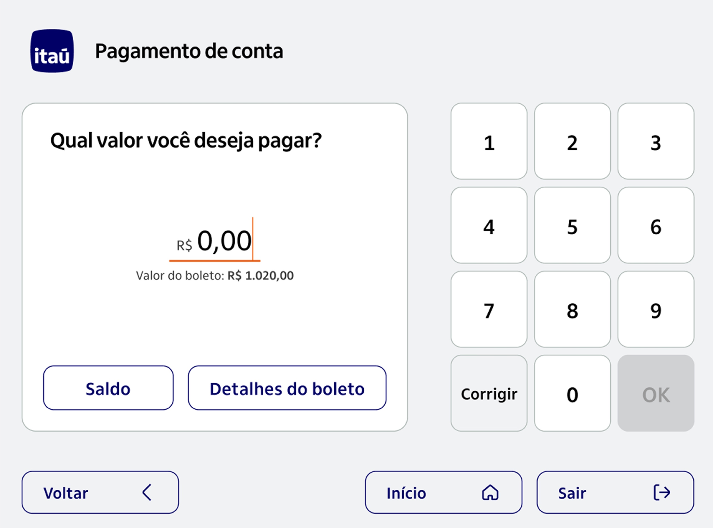
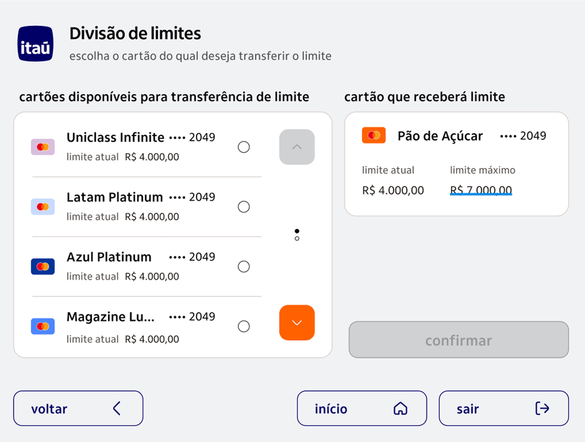
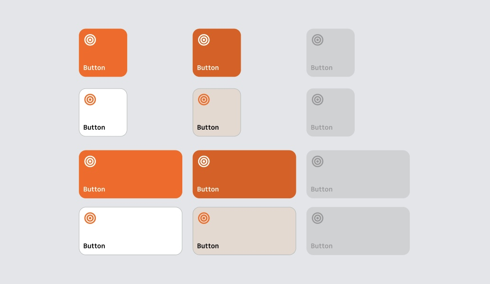
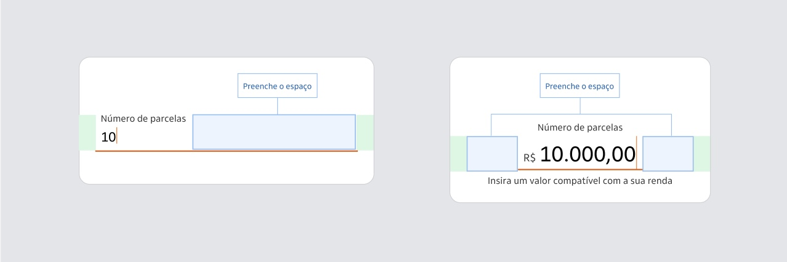

What I did
- Field research in branches and lab sessions with disabled and older customers
- Full redesign of the terminal’s screens and journeys
- A design system built from scratch for the ATM
- Voice journeys designed alongside every screen
- Accessibility specification for the build
- Handoff and support through development
Outcomes
+50%
Increase in NPS for the ATM experience
−30%
Median time to complete a transaction
2×
Every journey designed twice, once on screen and once in voice
Overview
A full redesign of Itaú’s ATM network, and a new design system built for it from the ground up. An ATM is used standing up, often outdoors, often in a hurry — by people with low vision, limited mobility, people who cannot read, and older customers with a queue behind them.
The existing terminal had grown into a wall of equal-weight options, with the important detail set in the smallest type. Its hardware could not run the screen-reader software already standard on phones. For a blind customer there was no accessible path at all.
We rebuilt it around what field research showed people actually do at an ATM: they don’t read. They orient by shape, colour, position and touch. So: fewer options per screen, larger targets, higher contrast, icons alongside words, the same three exits in the same place every time.
The design system was inherited from the bank’s app, so terminal and phone speak the same language. And because no existing screen reader would run on the machines, the bank built its own audio layer — every journey designed twice, once on screen and once as a spoken sequence.

3 takeaways
- 05People do not read at an ATM
- 01Complexity does not need more steps
- 02A system built to be built
05
People do not read at an ATM
Field visits to branches and lab sessions with older customers, blind customers, customers with motor disabilities and customers who cannot read all pointed the same way. Nobody reads a screen while standing at a machine with people waiting behind them. They scan for shape, colour and position, and they confirm with their hands.
That finding decided the rest. The secondary microcopy that used to carry the important detail was removed, the numbers that matter were made large enough to check at a glance, and every constraint was stated in words rather than implied by a disabled control.
01
Complexity does not need more steps
Splitting a credit limit between cards is the most complicated thing a customer can do at one of these machines. It fits in a single screen. Source on the left, destination on the right, current and maximum limits side by side, and a confirm button that stays inactive until there is a real choice to confirm.
Card art and brand marks do part of the work, because a customer who cannot read the card name still recognises it by sight.

02
A system built to be built
The design system was derived from the bank’s app system, reusing its tokens so the terminal would not become an island. What changed came from the physical context: type sizes and touch targets scaled for a screen viewed at arm’s length, contrast raised for glare, options per screen cut. And the same three anchors repeat at the bottom of every screen, so a customer can leave from anywhere without hunting.
Developers received the system and an accessibility specification alongside it, which is the part that decides whether any of this survives contact with the build.



What made it work
- No existing screen reader could run on the machines, so the bank built its own audio layer — a customer listens and touches, never speaks
- Developers received two specifications per journey, screens and voice, which is what made it possible to build consistently